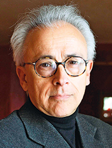

أنطونيو دامازيو (Antonio R. Damasio)
عالم أعصاب وطبيب وباحث بارز في مجال العلوم المعرفية. اشتهر عالمياً بنقده الراديكالي للنماذج العقلانية المجردة من خلال كتابه الشهير "خطأ ديكارت" (1994). يُعد عمله الجسر الفسيولوجي والإبستيمولوجي الضروري لفهم الممارسات السيكولوجية التربوية. حيث يوفر الإطار العصبي الذي يفسر كيف أن العاطفة والجسد ليسا عائقين أمام القرار المهني، بل هما "الوقود العاطفي" الذي يمنح القيمة المعرفية لاختيارات المتعلم في سيرورة التوجيه التربوي.
الأطروحة المركزية: العقل المجسد (The Embodied Mind)
يدافع دامازيو عن أطروحة ثورية مفادها أن العقل ليس وظيفة منطقية مجردة تعمل في فراغ، بل هو نتاج تفاعل مستمر وحيوي بين الدماغ والجسد. في هذا النسق، لم ينشأ العقل ليفكر في الرياضيات أو الفلسفة أولاً، بل كأداة بيولوجية متطورة لخدمة الاستتباب (الحفاظ على توازن الحياة). العواطف ليست "أعداء" للعقلانية، بل هي الأساس الذي تقوم عليه، مما يحول مركز الثقل الفلسفي من "أنا أفكر إذن أنا موجود" إلى "أنا موجود كجسد إذن أنا قادر على التفكير والشعور". [1]
الإشكال المعرفي: تفكيك الثنائية الديكارتية
يحاول دامازيو حل أزمة معرفية كبرى سيطرت على الفكر الغربي لقرون، والتي فصلت بشكل حاد بين "الجوهر المفكر" (العقل) و"الجوهر الممتد" (الجسد). هذا الإشكال ليس مجرد ترف فلسفي، بل هو مأزق بيولوجي قاتل يتجلى في التساؤلات التالية:
- لماذا يفشل الأشخاص ذوو الذكاء المنطقي السليم تماماً في اتخاذ قرارات بسيطة في حياتهم الشخصية والاجتماعية بعد إصابة دماغية محددة (تلف القشرة الجبهية الحجاجية)؟
- كيف نرد الاعتبار للجسد الانفعالي في تفسير "أسطورة العقلانية المحضة" التي افترضت خطأً أن القرار السليم يتم بدم بارد وإقصاء تام للمشاعر؟
- كيف تتحول النبضات الفيزيولوجية و"خرائط الجسد" إلى تجربة ذاتية ووعي بيولوجي يوجه مسار الاختيارات الإنسانية؟
الحجج الأساسية في نسق دامازيو
-
حجة الوسم الجسدي (Somatic Marker Hypothesis)
يثبت دامازيو أن الدماغ يستخدم علامات أو وسوماً جسدية (كتسارع النبض، انقباض الصدر، فراشة المعدة) كإشارات إنذار أو تشجيع لاختصار وتوجيه عملية اتخاذ القرار المعقدة. مثال توضيحي: عندما يواجه التلميذ حيرة بين مهنتين تتقاربان منطقياً، فإن الاستجابة الجسدية (ضيق أو ارتياح) عند تخيل ممارسة المهنة توفر بوصلة بيولوجية أسرع وأدق من جداول المقارنة الباردة. [2]
-
الأدلة السريرية والإكلينيكية (حالة فينياس غيج والمريض إيليوت)
قدمت الحالات السريرية برهاناً داحضاً؛ مرضى يتمتعون بذكاء منطقي متقدم وذاكرة سليمة، لكنهم دمروا حياتهم المهنية والاجتماعية لعجزهم عن اتخاذ القرارات نتيجة فقدانهم لقدرة الربط الانفعالي (بسبب تلف عصبي محدد). هذا يثبت أن العقلانية تتعطل تماماً إذا فُصلت عن العاطفة.
-
التسلسل النشوئي للذات (من البيولوجيا إلى السرد)
يرى دامازيو أن الوعي يتطور عبر مستويات متراتبة: يبدأ من "البروتو-ذات" (خرائط عصبية عفوية للحالة الجسدية الخام)، مروراً بـ "الذات المحورية" (الشعور بالوجود هنا والآن أثناء التفاعل مع المثير)، وصولاً إلى الهوية السردية أو السير-ذاتية (المعتمدة على الذاكرة والمستقبل). لا يمكن بلوغ الأخيرة بمعزل عن الإحساس الجسدي القاعدي.
الفرضيات الإبستمولوجية الضمنية
يتبنى دامازيو في بنائه النظري عدة مسلمات خفية تعمل كبديهيات موجهة:
فرضية النزعة الطبيعية (Naturalism)
يفترض ضمناً أن كل ظاهرة سيكولوجية، مهما بلغ تعقيدها (كالضمير الأخلاقي، الوعي، أو القرار المهني)، تمتلك بالضرورة مكافئاً فيزيائياً حتمياً في الدماغ والجسد، رافضاً أي تفسير ميتافيزيقي للوعي.
فرضية الاستمرارية الحيوية (Biological Continuity)
يوجد خيط متصل يبدأ من ذكاء الخلية الواحدة استجابةً للخطر، وصولاً إلى الوعي البشري المعقد. الفارق بين ارتباك تلميذ عند اختيار مسار دراسي وانغلاق محارة عند الخطر هو فارق في "درجة التعقيد" وليس في "النوع".
فرضية الدماغ كرسام خرائط (The Brain as Map-maker)
الوظيفة المركزية للدماغ هي الرصد المستمر ورسم خرائط ديناميكية لكل عضلة، غدة، وانفعال داخل الجسد. الوعي ينبثق كناتج لعملية التفاعل بين هذه الخريطة الجسدية والموضوع الخارجي.
حدود الطرح ونقاط ضعفه (التحليل النقدي)
رغم الثورة المعرفية التي أحدثها النموذج الدامازيوي، تواجه أطروحته بعض المآزق الإبستيمولوجية التي يجب استحضارها وتجاوزها بيداغوجياً:
- "الفجوة التفسيرية" (The Explanatory Gap): برع دامازيو في وصف الميكانيزمات العصبية (كيف تُبنى الخرائط)، لكنه لم يقدم تفسيراً حاسماً لسؤال "كيف ولماذا تتحول المادة العصبية إلى ماهية الإحساس والتجربة الذاتية الحية (Qualia)؟".
- الاختزال البيولوجي: قد يوحي طرحه أحياناً باختزال الإنسان والقرار الأخلاقي في حتمية الاستجابات الكيميائية والهرمونية، مما يُنذر بإضعاف مفاهيم الإرادة الحرة والمسؤولية الواعية، ليصبح الفرد أشبه بـ "طيار آلي" جسدي.
- إهمال البعد السوسيو-ثقافي: تركيزه المفرط على "الداخل" البيولوجي قد يُغفل دور السياق، اللغة، والتفاعل الاجتماعي كمنتجين أصيلين للهوية المهنية وليسوا مجرد ملحقات. فالمراهق المغربي مثلاً قد يُنتج وسماً جسدياً "إيجابياً" استجابةً لضغوط "إرضاء الوالدين" وليس لميوله الذاتية العميقة.
الخريطة المفاهيمية البصرية
توضح هذه الخريطة الديناميكية تقاطعات نموذج دامازيو مع مفاهيم التوجيه المهني المعاصر:
الهندسة التطبيقية: نقل المعرفة من الدماغ إلى الممارسة
لتطبيق "تصحيح خطأ ديكارت" في الممارسة التربوية (عبر تقنيات مثل السيكودراما ولعب الأدوار)، نتبع المسار المنهجي التالي:
الخطوة 1: المحفز الخارجي (Trigger) الموقف الضاغط
وضع التلميذ في موقف محاكاة مهنية صريح (مثلاً إسناد دور مهندس يواجه مشكلة موقع). الهدف ليس المعالجة الرمزية المكتوبة بل تفعيل "حلقة المحاكاة" العصبية لاستدعاء الجسد.
الخطوة 2: استدعاء الوسم الجسدي
رصد التغيرات الفسيولوجية العفوية (ارتباك الحركة، وتيرة التنفس). الدماغ يقوم بمطابقة خريطة حالة الجسد الآنية مع متطلبات الدور المهني لفرز قيمة عاطفية (إشارة إنذار أو تشجيع).
الخطوة 3: الوعي بالحس الداخلي (Interoceptive Awareness)
استخدام أدوات مساعدة (مثل مقياس MAIA) لتدريب التلميذ على إدراك وفهم لغة انفعالاته الجسدية، ليتحول التفاعل البيولوجي اللاواعي إلى معرفة إبستيمولوجية واعية.
الخطوة 4: التكيف المهني وتثبيت القرار
دمج هذا الشعور "الحي" ضمن السردية الذاتية للمتعلم. الفرد هنا يختار مساره ليس لأنه فكر فيه منطقياً فحسب، بل لأنه استشعره حيوياً في جسده (استتباب مهني).
اقتباسات مرجعية داعمة
عندما تقترن علامة جسدية سالبة بنتيجة متوقعة معينة، فإنها تؤدي دور إشارة إنذار. أما عندما يتعلق هذا الاقتران بعلامة جسدية موجبة، فإنها تصبح على العكس من ذلك إشارة تشجيع، تضيق مسارات الاستدلال المنطقي وتوجهه بشكل حاسم. — أنطونيو دامازيو، خطأ ديكارت (النسخة الفرنسية)، 1994، ص. 240.
مكان التوظيف الأكاديمي: يُستخدم هذا الاقتباس كمبرر عصبي-معرفي أساسي لاستخدام تقنيات لعب الأدوار كمحاكاة سردية متجسدة لتجاوز المقابلات اللفظية الجافة في التوجيه المهني.